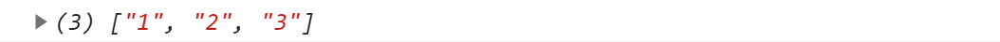
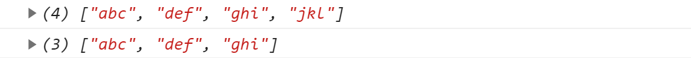
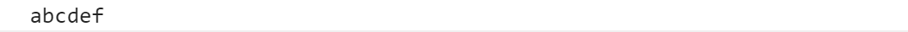
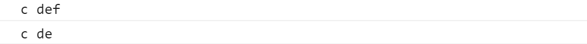
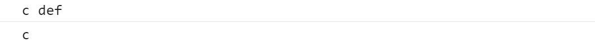
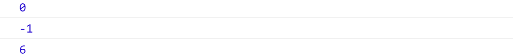

一、四个支持正则的字符串方法
match()
- 在字符串内检索指定的值，或找到一个或多个正则表达式的匹配，将匹配的值放到数组里返回
var str="1 abc 2 def 3" |

search()
用于检索字符串中指定的子字符串，或检索与正则表达式相匹配的子字符串，返回匹配到的第一个子串首字母的位置
如果没有找到任何匹配的子串，则返回-1
var str="abc DEF DEF!" |
split()
- 把字符串分割为字符串数组
var str="abc def ghi jkl" |

replace()
- replace()方法用于在字符串中用一些字符替换另一些字符，或替换一个与正则表达式匹配的子串
var str="abc Def!" |
二、两个也支持数组的字符串方法
slice()
- 截取字符串的片断，并在新的字符串中返回被截取的部分。
start :要抽取的片断的起始下标。如果是负数，则该参数规定的是从字符串的尾部开始算起的位置。也就是说，-1 指字符串的最后一个字符，-2 指倒数第二个字符，以此类推。
end：紧接着要抽取的片段的结尾的下标。若未指定此参数，则要提取的子串包括 start 到原字符串结尾的字符串。如果该参数是负数，那么它规定的是从字符串的尾部开始算起的位置。
var str="abc def ghk" |
concat()
- 连接字符串
var a = "abc"; |

三、四组类似的字符串方法
charAt()
- 返回在指定位置 的字符
var str="abc" |
charCodeAt()
- 返回在指定位置 的字符的Unicode 编码
var str="abc" |
fromCharCode()
- 将指定的Unicode值 转换为字符串
console.log(String.fromCharCode(72,69,76,76,79)); |
substr()
- 提取子串
- start ：必需。子串的起始下标 。必须是数值。如果是负数，那么该参数声明从字符串的尾部开始算起的位置。
- length ：可选。字串长度。必须是数值。如果省略了该参数，那么返回从开始位置 到结尾 的字串。
var str="abc def" |

substring()
- 提取子串
- start ：必需。子串的起始下标 。不能为负数。
- stop ：可选。子串的终止下标(含头不含尾)。一个非负的整数。如果省略了该参数，那么返回从开始位置 到结尾 的字串。
var str="abc def" |

toLocaleLowerCase()/toLowerCase()
- 把字符串转换为小写
toLocaleUpperCase()/toUpperCase()
- 把字符串转换为大写
indexOf()
- 返回检索到的第一个子串 的索引值。
- 对大小写敏感
var str="Hello world!" |

lastIndexOf()
- 返回检索到的最后一个子串 的索引值
四、三个其他
trim()
- 移除字符串首尾空白
localeCompare()
用本地特定的顺序 (例：按数组中元素的先后顺序比较)来比较两个字符串
一般与数组的sort()方法连用
英文根据字母排序，汉字根据拼音排序
返回值
- a < b 返回值小于0
- a > b 返回值大于0
- a = b 返回值等于0
a.sort(function(a,b){return a.localeCompare(b)}); //正序排列 |
valueOf()
返回某个字符串对象的原始值
很多函数都已经重写了该方法